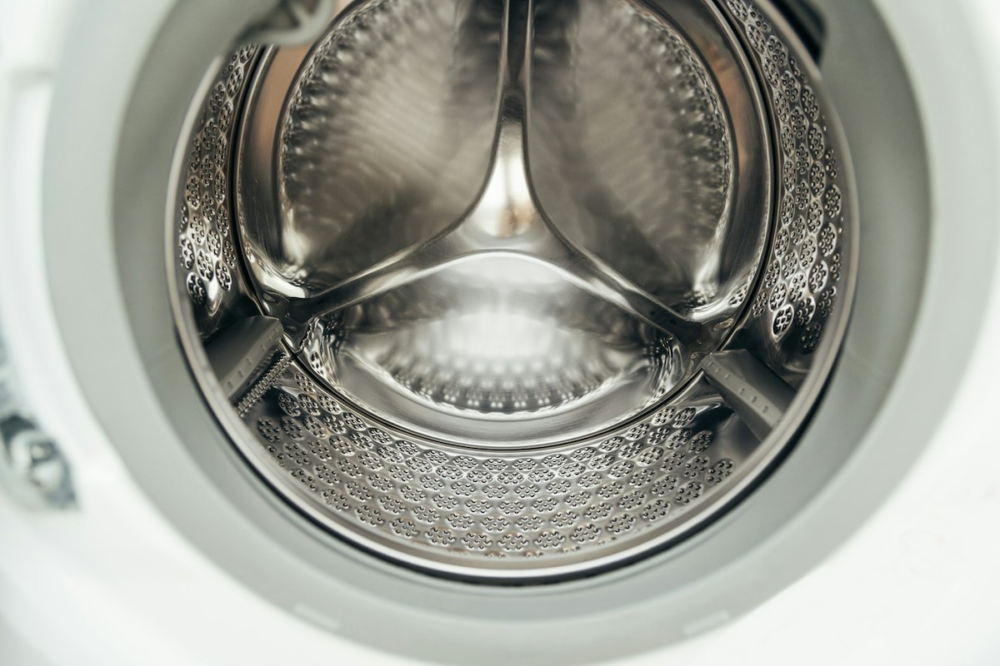
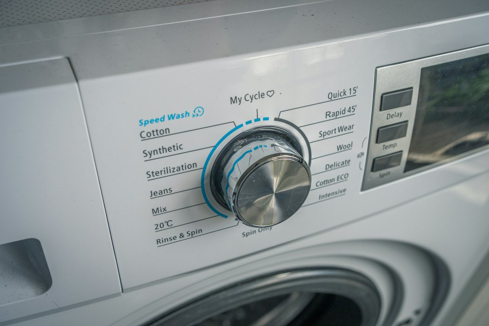
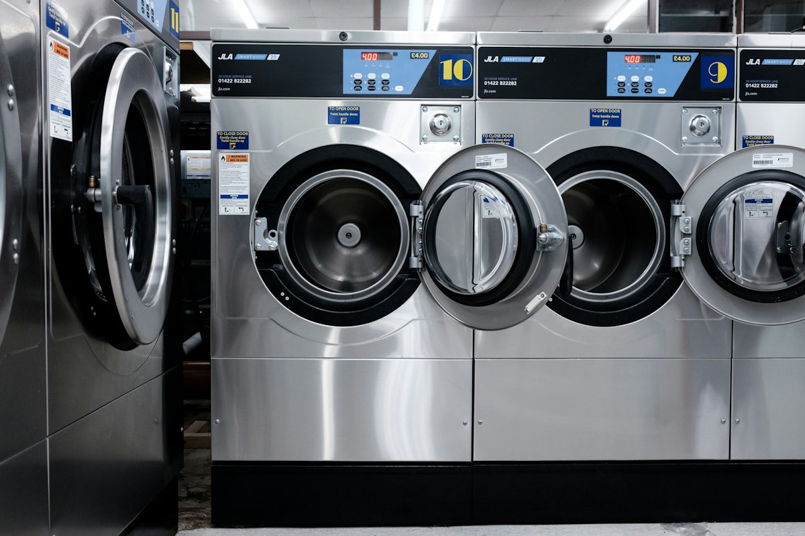
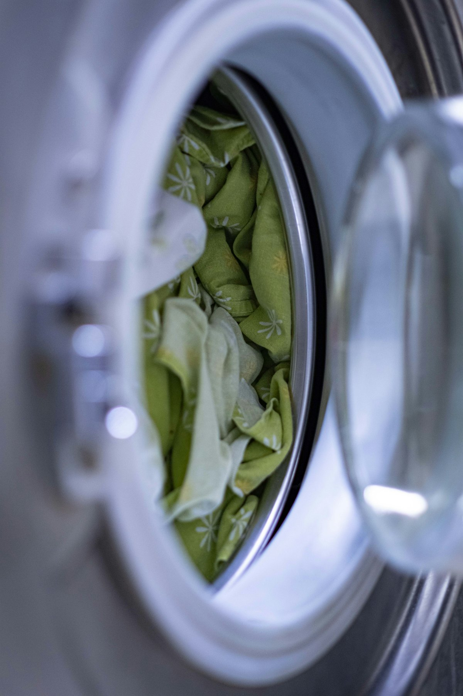
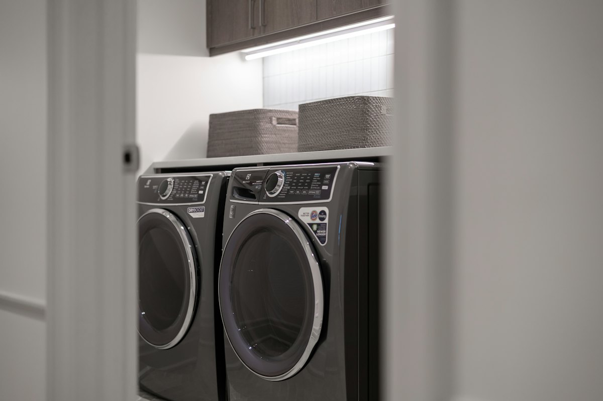
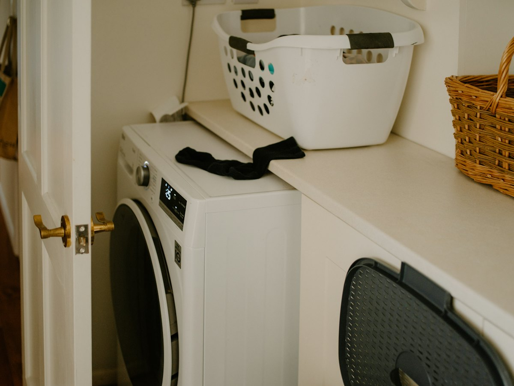
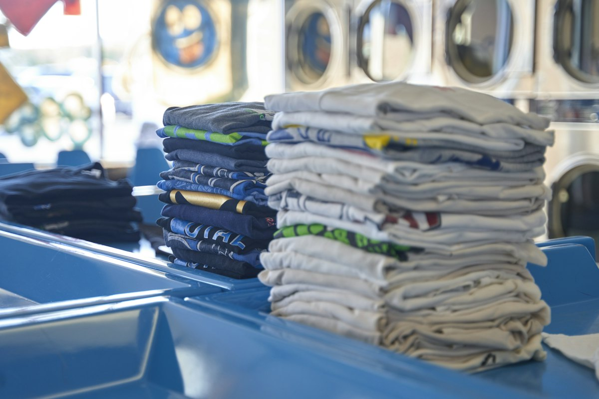

Na Barra do Sambaqui
A Camargo's conserta máquinas de lavar roupas em Florianópolis - SC. Você conta o que está acontecendo, recebe o orçamento e a máquina volta a lavar.


Serviços
Conserto de lavadoras
Máquinas de lavar roupas com abertura em cima ou frontal.
Diagnóstico do defeito
A máquina não liga, não centrifuga, não solta a água, vaza ou faz barulho? O primeiro passo é encontrar a causa.
Orçamento pelo WhatsApp
Mande o defeito, o tipo e o modelo da máquina para receber o orçamento.

Como funciona
- Conte o defeito. Use o formulário ao lado ou escreva no WhatsApp.
- Receba a orientação. A Camargo's explica o atendimento e o orçamento.
- Conserto. Combinado o serviço, a máquina volta a funcionar.
Monte sua mensagem
Galeria
Imagens ilustrativas de banco de imagens (Unsplash). Não mostram a oficina nem trabalhos da Camargo's.




Dúvidas
Qual o horário de atendimento?
Segunda a sexta, das 8h às 18h, e sábado, das 8h às 12h. Domingo fechado.
Onde fica?
Servidão Martinho Manoel Peixoto, 163, Barra do Sambaqui, Florianópolis - SC, 88051-440.
Como peço um orçamento?
Pelo WhatsApp (48) 98843-6202. Conte o defeito, o tipo de máquina e, se souber, a marca e o modelo.
Vocês buscam a máquina ou atendem em casa?
Pergunte no WhatsApp: a forma de atendimento é combinada direto com a Camargo's.
Quais marcas vocês consertam?
Informe a marca e o modelo na mensagem para a Camargo's confirmar o atendimento.
Quanto custa o conserto?
O valor depende do defeito. O orçamento é passado depois de entender o problema.
Contato
(48) 98843-6202Horário
Seg a sex, 8h às 18h · sáb, 8h às 12h.
Horário
- Segunda a sexta
- 8h às 18h
- Sábado
- 8h às 12h
- Domingo
- Fechado
Localização
Servidão Martinho Manoel Peixoto, 163
Barra do Sambaqui, Florianópolis - SC, 88051-440